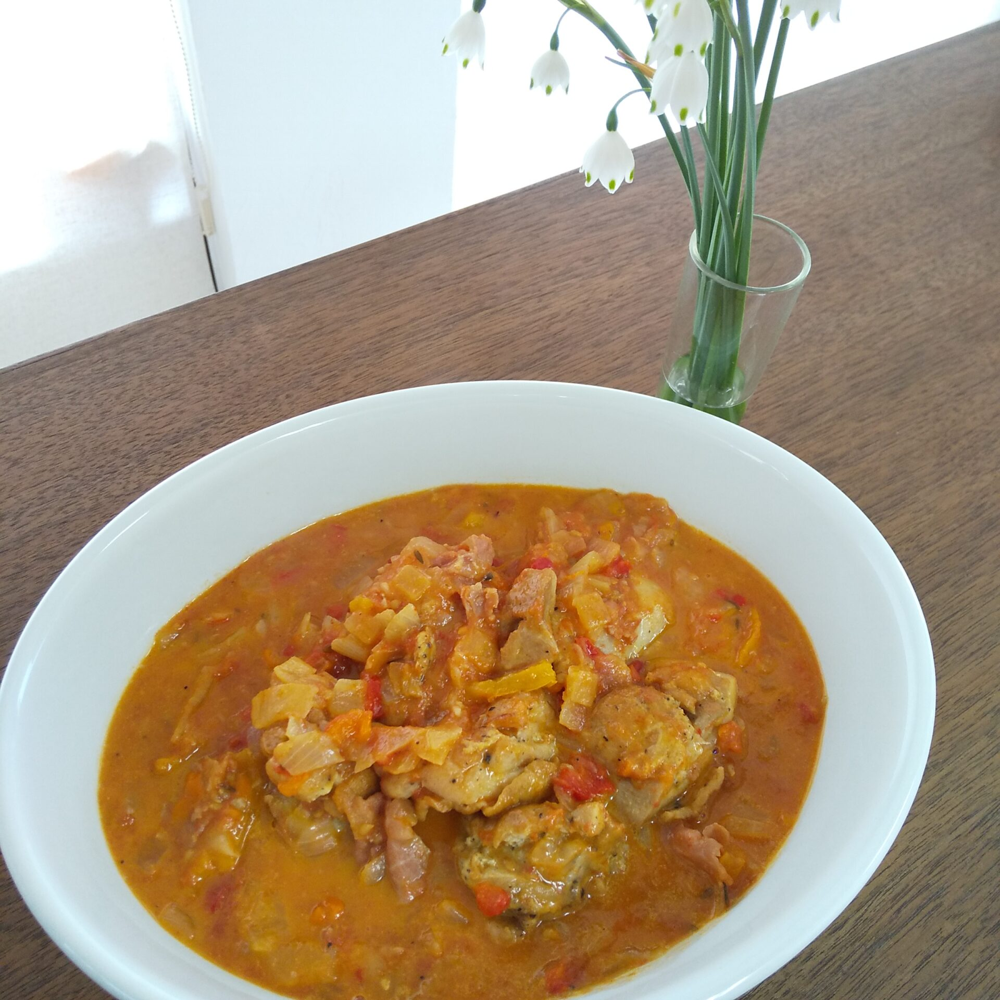
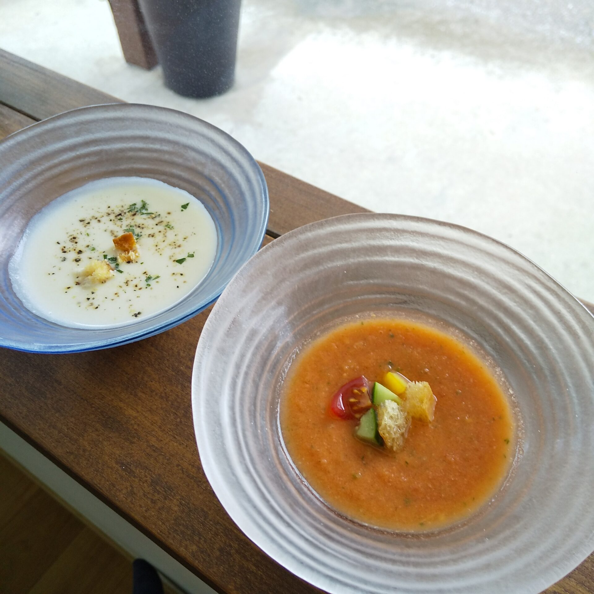

夏季休暇のお知らせ
- 2021.07.18
- お知らせ
- お店のこと
「SHINONの煮込み料理」
SHINONのロゴマークは，お鍋で野菜をコトコト煮込んでいるイメージ。
煮込み料理って人をホッとさせる力がありますよね。
それは，家族のことを想い，手間ひまかけてじっくりと作るから。
SHINONでは，そんな人を想う煮込み料理を作っていきたいと思います。
この季節，暑くなってきたので，
熱いスープを食する煮込み料理は一休みして，
●鶏肉のバスケーズ
（こんがりと焼き目をつけた鶏もも肉をパプリカ，トマト，生ハム
と煮込んだフランス家庭料理。水を使っておらず，
パプリカ，トマトから出た水分がスープとなります。）
●豚の角煮
（豚バラ肉の余分な油を落とし，3時間ほどコトコト。
八角の香りが食欲をそそります）
●ビシソワーズ
（じゃがいもの冷製スープ，舌触りなめらかにこっくりと。）
●ガスパチョ
（暑い夏にゴクゴク飲めるトマトベースの冷製スープ） etc…
煮込み料理は，1日1品のご提供で，基本的には日替わりとなります。
今日の煮込み何？ってお電話ください。
いつでもお答え，お取り置きいたします。
また，美味しそう!!って思える料理，ホームページでご紹介していきますね。
ビシソワーズとガスパチョ→
